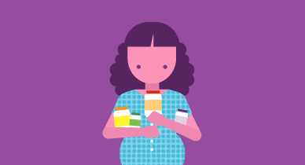

Staying Healthy During Pregnancy
If you're thinking about getting pregnant -- or if you already are -- you probably know some of the basics about taking care of yourself and the baby. Don't smoke. Don't drink. Get your rest. Here are more tips, from taking vitamins to what to do with the kitty litter, that can help ensure a safe and healthy pregnancy.
Take a Prenatal Vitamin
Even when you're still trying to conceive, it's smart to start taking prenatal vitamins. Your baby's neural cord, which becomes the brain and spinal cord, develops within the first month of pregnancy, so it's important you get essential nutrients, like folic acid, calcium, and iron, from the very start. Prenatal vitamins are available over the counter at most drug stores, or you can get them by prescription from your doctor. If taking them makes you feel queasy, try taking them at night or with a light snack. Chewing gum or sucking on hard candy afterward can help, too.